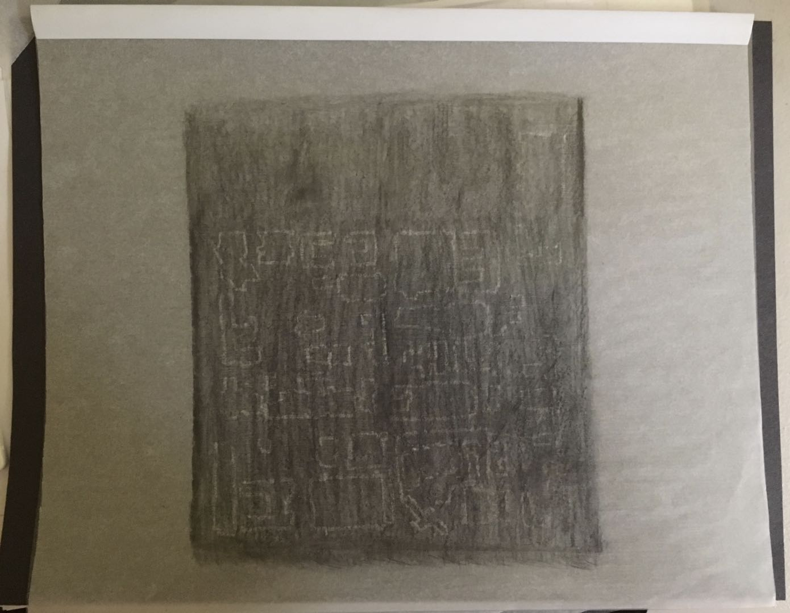

“Fantasy Panda”, Photoshop Composite Image, 2019
It is one of the series of Hyperreal Pandas' Residence that I made. My idea for this one is that I often wonder if the pandas will be confused if they live in sugar cane fields because bamboo and sugar cane are very similar. Therefore, I used a Panda to link these two very close elements and collage them together to more vividly highlight their differences.

“Fantasy Panda”, Photoshop Composite Image, 2019
This work is part of the series of Hyperreal Pandas’ Residence I made. I have anthropomorphized the panda, representing me to travel and explore the bamboo forest. Also, I imagine exploring the panda habitat.

“Fantasy Panda”, Photoshop Composite Image, 2019

“Fantasy Panda”, Photoshop Composite Image, 2019
"Name Design", Digital Image, 2018
A practice using Maya to design my initials and learn lighting effects.
"Changing Faces", Coding and Gif, 2019
A process to experience a variety of ways to make emoticons from traditionally based retouching software. I used P5.js to program this emoji. I especially like to use emojis when chatting, just like many people. So to better access it in chat, I turned it into Gif with Adobe Premiere. The design I associate the cultural elements of Peking Opera's face change. It shows a bit of creation that can make things better.


“Draw a Map to Get Lost”, Colored pencil Drawing, 2018
This is a response to Yoko Ono‘s “Map Piece.” The first interactive work I made. The process of making this is a combination of ideas: first, from the Art 2 class lecture, Jenny Holzer’s Redaction, which an essential part of the document that was blacked out and could not be seen. One story my sister said, one night she came out of the library, it was too dark, she couldn’t see the direction, and she lost her way. When I was volunteering while I was in high school, I had a map, but I didn't understand it. I try to show the idea that people may get lost even if they have a map. The interactive section allows the viewer to learn to read the map.